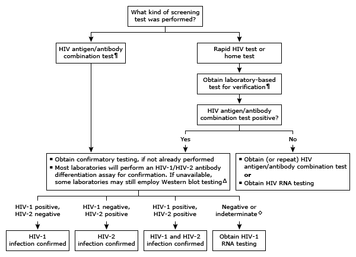

* HIV screening tests are reported as positive or negative. Interpretation of a specific abnormal test result should be based upon the reference range reported with that result.
¶ The preferred test for initial screening is the combination HIV antigen/antibody test. If unavailable, a laboratory-based, antibody-only test is an acceptable alternative.
Δ A positive initial test followed by a positive HIV-1 Western blot test suggests HIV-1 infection. If Western blot is negative or indeterminate, obtain HIV-1 RNA test.
◊ A negative antibody or virologic test does not exclude HIV infection if obtained in the gap between viral transmission and the development of viremia or an antibody response. If suspected, obtain quantitative or qualitative HIV-1 RNA test. In persons from HIV-2 endemic areas (eg, West Africa), further testing with a specific HIV-2 Western blot test and HIV-2 DNA/RNA should be performed.